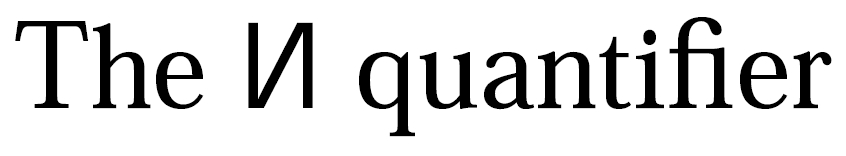

The NEW-quantifier gives meaning to ‘for a fresh name’
introduced in my thesis and
A new approach to abstract syntax with variable binding and the prominent new quantifier of nominal logic.
The NEW-quantifier satisfies a characteristic self-dual some/any property, presented in a form useful for rigorous but informal discourse (that is, for a research paper) in Theorem 6.5 of Foundations of nominal techniques. See also Theorems 4.6 and 4.7 of the same paper.
LaTeX notation
If you type this into LaTeX:
\usepackage{graphics} %needed for the NEW quantifier
\newcommand\new[0]{\reflectbox{\ensuremath{\mathsf{N}}}}
%The quantifier itself, a reversed sans-serif N
%(by analogy with the reversed E of `exists'
%and the reversed A of `forall')
\newcommand\New[1]{\new #1.}
%A macro, as in \New{a}\phi
The $\new$ quantifieryou get this:

The quantifier
A backwards N
This is not a russian letter! It is a reflected sans-serif roman letter, by analogy with ∀ the
reflected A of ‘for all’
and ∃ the reflected E of ‘exists’
.
This pun is one of Andrew Pitts’s ideas. When we discovered (invented?) the NEW quantifier, he suggested a backwards N notation, and this impressed me deeply.
Simple and commonsense can also be brilliant — even in computer science. I made a mental note.